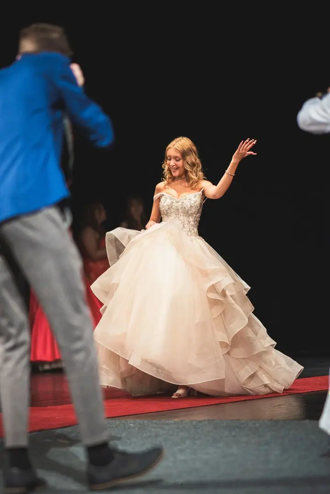
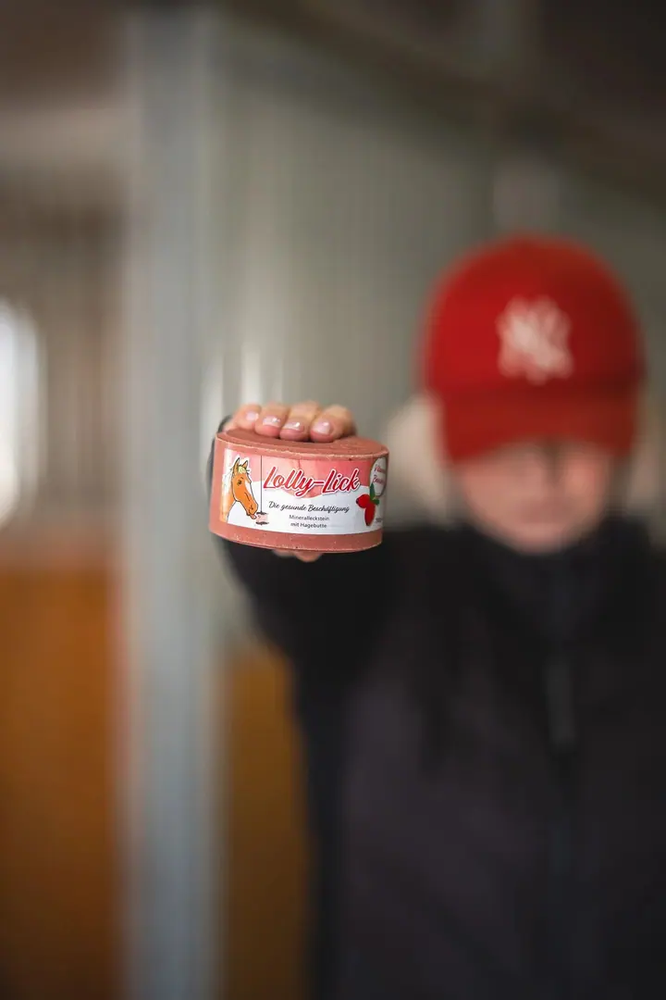
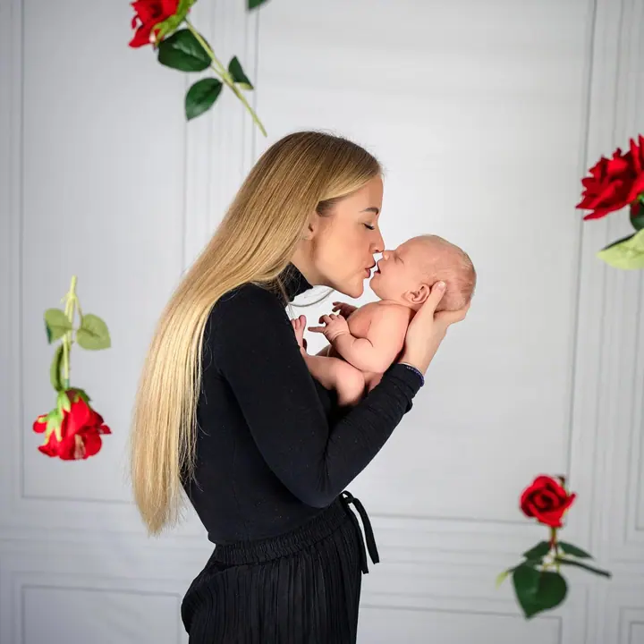
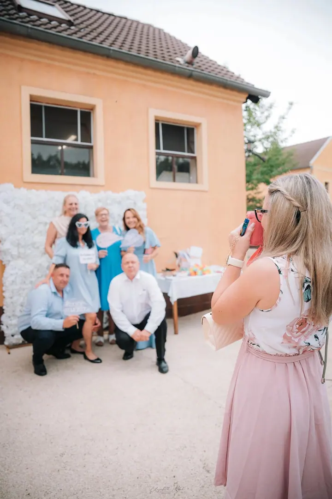
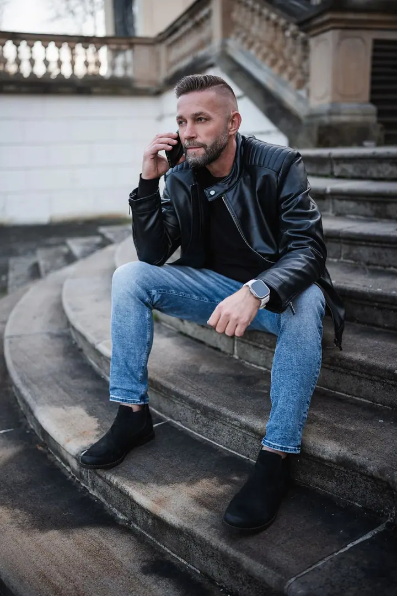

01 / 04
Svatební foto a video
Fotím společně s kameramanem Ralphem, takže si odnesete fotky i video. Nebudeme vás rovnat do naaranžovaných situací, chceme, abyste svůj den opravdu prožili.
Zeptat se na termín→




Váš příběh na fotkách i na videu
Zeptat se na termín →(01) Ahoj
Jmenuji se Eliška Machová a jsem svatební a lifestyle fotografka z Ústeckého kraje. Fotím svatby, rodiny a páry , ale stejně ráda vyrážím za psy a koňmi na pastvinu i na závody. Na svatbách tvoříme sehraný tým s kameramanem Ralphem, takže si odnesete fotky i video.
(02) Co fotím
01 / 04
Fotím společně s kameramanem Ralphem, takže si odnesete fotky i video. Nebudeme vás rovnat do naaranžovaných situací, chceme, abyste svůj den opravdu prožili.
Zeptat se na termín→02 / 04
Fotím přirozeně, bez strojených póz a s respektem k vašemu tempu. Chci, abyste z focení neodcházeli jen s fotkami, ale s pocitem hezky stráveného času.
Zeptat se na termín→03 / 04
Portréty koně, kůň s majitelem, focení na černém pozadí i závody a tréninky. Fotím venku, bez spěchu a v prostředí, kde se kůň cítí dobře.
Zeptat se na termín→Dále nabízím
Gaučák, sportovec roku i profi žebrák pamlsků. Fotím portréty psů, psy s majiteli, akce a sporty i štěňata pro chovatelské stanice.
↗(04) Postup
Od první zprávy po hotovou galerii.
Krok 1 z 4
Napište mi nebo zavolejte, o jaké focení máte zájem a kdy by se vám hodilo. Společně vybereme balíček a místo.
Krok 2 z 4
Termín je závazně váš po úhradě rezervačního poplatku 500 Kč, který se pak odečte z ceny focení.
Krok 3 z 4
Fotím venku i v ateliéru, přirozeně a bez strojených póz. Lidem, psům i koním nechávám čas, aby se cítili dobře.
Krok 4 z 4
Fotky vyberete v online náhledové galerii a upravené je dostanete podle balíčku do 10 dnů až 3 týdnů. Pokud chcete, objednáte si k nim tisky nebo fotoobrazy.
Prožijte svůj den a večer klidně tančete bosí.
(05) Za objektivem
Na svatbě vás nebudu celý den rovnat do dokonale naaranžovaných situací ani vás nutit dělat něco jen proto, že to dobře vypadá na Instagramu. Chci, abyste se smáli, připili si, objímali se a večer skončili na parketu klidně bosí. Někdy jsem u toho nenápadně, jindy vám poradím, kam dát ruce nebo kam se postavit.
U rodinného, párového nebo těhotenského focení mi jde hlavně o to, abyste spolu strávili hezký čas. Fotím přirozeně, bez strojených póz a s respektem k vašemu tempu a povaze. Když chcete, můžeme fotit i v ateliéru v Teplicích nebo v Ústí nad Labem.
Velkou část mé práce tvoří zvířata. Koně fotím venku, bez spěchu a s důrazem na klidnou komunikaci mezi mnou, koněm a jezdcem. Ráda přijedu i na vaše závody nebo trénink, a stejně tak vyfotím vašeho psa s jiskrou v očích, zabahněnýma packama nebo s jazykem metr venku.
Eliška
Eliška Machová · Svatební a lifestyle fotografka
Balíčky začínají na 1 500 Kč za balíček MINI s 5 upravenými fotkami a končí balíčkem ALL INCLUSIVE za 6 000 Kč se všemi povedenými fotkami. MINI lze využít jen v Teplicích a blízkém okolí. Svatbu domluvíme podle rozsahu vašeho dne.
Ano. Kameraman s námi stráví čas při focení a vytvoří 30 až 60sekundové video, ideální pro Instagram Reels nebo TikTok. Cena videa je 800 Kč, jen o něj prosím napište předem.
Ano, k dispozici je ateliér v Teplicích nebo v Ústí nad Labem. Cena focení se zvýší o částku za pronájem ateliéru.
Kůň by měl dorazit vyčištěný a upravený, bez zaschlého bahna v hřívě, na hlavě a na těle. Drobné nečistoty běžně vyretušuji.
(07) Kontakt
Napište pár vět o tom, co si představujete, a termín, který se vám hodí.